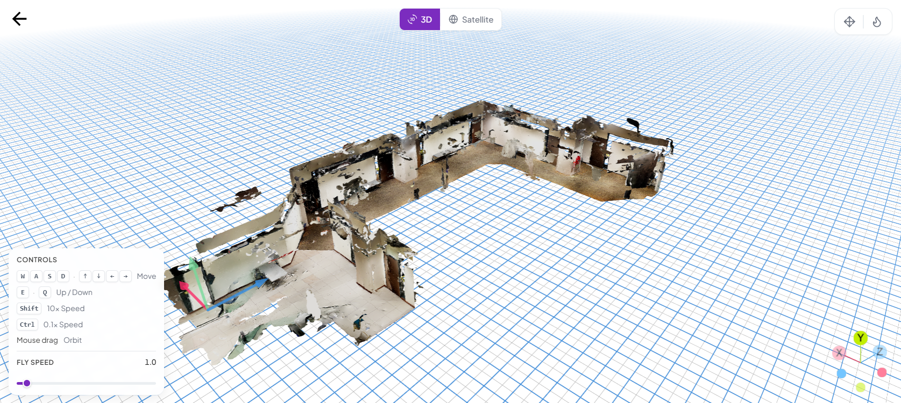
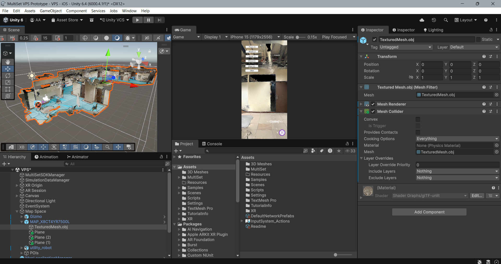
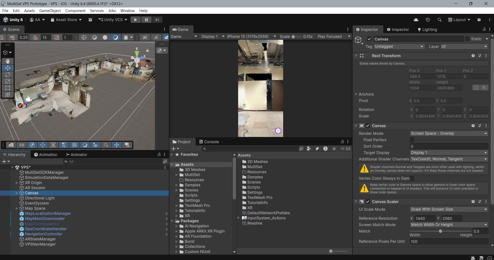
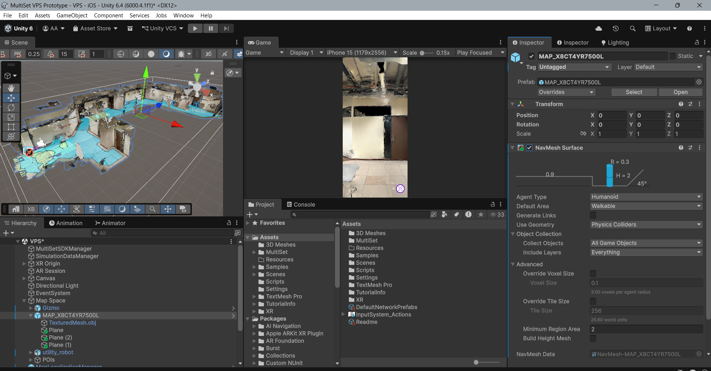
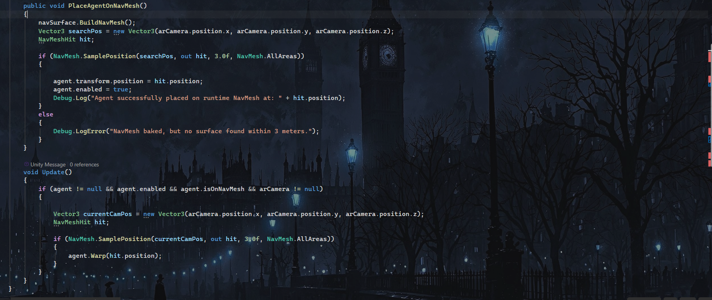
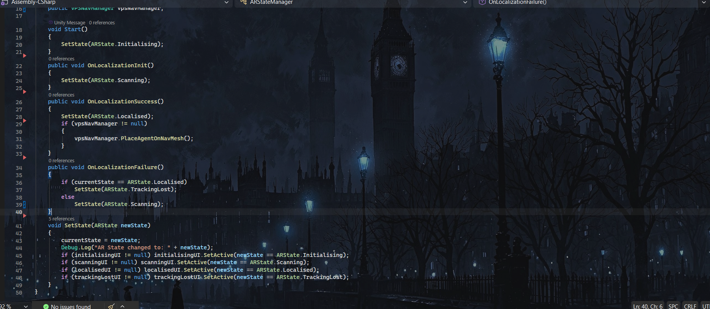
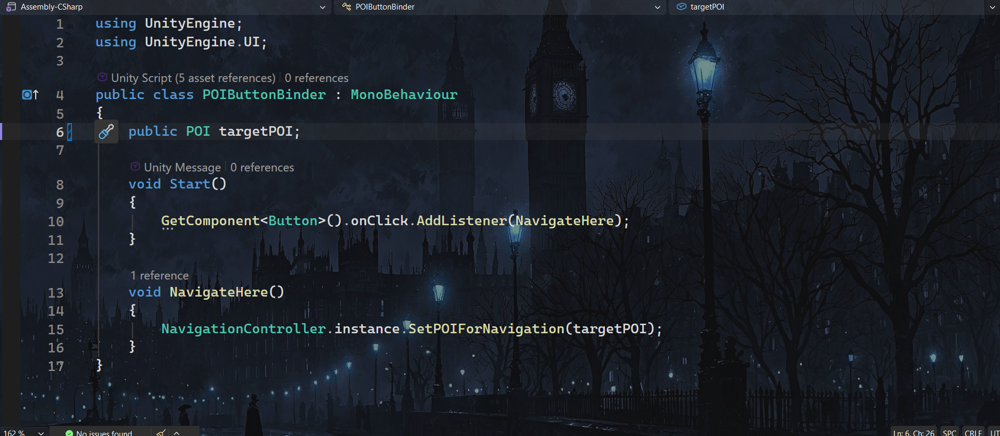
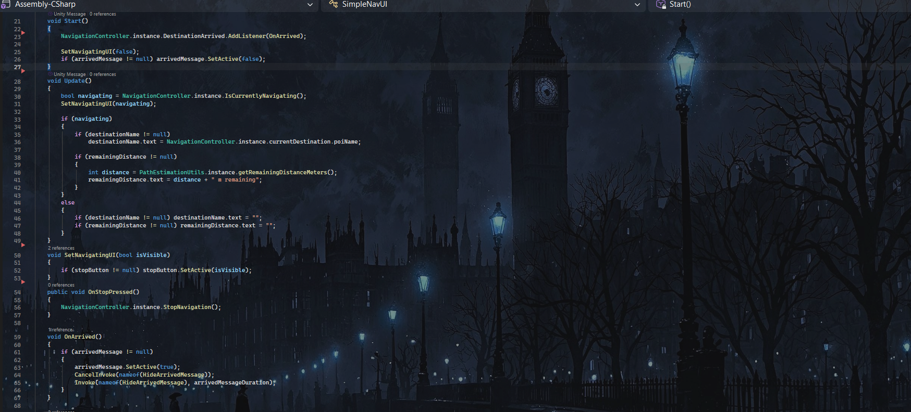
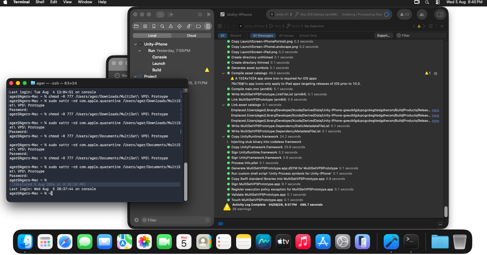

Phase 1: Capturing the Campus Corridor

The foundation of any Visual Positioning System relies entirely on the accuracy of its spatial map. For this initial step, I took the MultiSet scanner application out into a corridor right here on the Asia Pacific University campus. By systematically walking the space and capturing the environment from varying angles, I ensured the cloud service received a dense collection of visual feature points. This data was crucial for establishing a solid anchor for the coordinate system.
Once the upload finished, the application processed the scan into a workable digital twin and a spatial mesh. Knowing how finicky augmented reality localization can be, getting a clean and comprehensive scan of the physical hallway was a massive relief. This raw map data set the stage for all the complex routing logic that would follow.
Phase 2: Unity Integration and iOS XR Setup

With the physical corridor successfully mapped, it was time to bring that data into the engine. I booted up Unity and imported the MultiSet SDK to bridge the gap between the cloud map and my digital environment.
Since the target device was an iPhone, I immediately configured the build settings for iOS and installed the necessary XR plugin packages, specifically AR Foundation and Apple ARKit. Getting the foundation right is critical in augmented reality development, so I set up the core AR Session and AR Camera, ensuring the camera was primed to feed real time visual data to the MultiSet localization manager. Once the XR rig was locked in and the SDK authenticated with my map dataset, the pipeline was officially ready to handle the heavy lifting of spatial tracking.
Phase 3: Setting Up Localization

Getting the localization running from scratch can sometimes be a tedious process of linking scripts and configuring components. To quicken the process, I leveraged the sample scenes included directly inside the MultiSet SDK.
By navigating to the Package Manager in Unity, I was able to import the prepackaged Sample Scenes straight into my project. I opened up the Localization.unity scene, which already had the core architecture laid out for basic localization functionality.
Instead of building the spatial manager from the ground up, all I had to do was select the main manager object in the hierarchy and locate the MapLocalizationManager component. From there, I simply pasted in my specific Map Code generated from the developer portal. Within minutes, I had a working scene where the phone could recognize the physical campus corridor and snap the digital spatial map into perfect alignment. It was a massive time saver that let me move straight into the fun part: the actual augmented reality pathfinding!
Phase 4: NavMesh Setup, Pathfinding Scripts, and UI Integration

With the physical campus corridor scanned and the MultiSet localization running smoothly, it was time to tackle the hardest part of the project: getting a virtual AI agent to navigate an invisible augmented reality floor. Here is how I broke down the final phase.
Phase 4.1: Runtime NavMesh Baking and the AI Agent

The core challenge in Unity AR navigation is that a standard NavMeshAgent requires baked geometry to walk on, but our MultiSet spatial map is purely mathematical offset data. To solve this, I created the VPSNavManager script.
Instead of prebaking a static floor, the script dynamically calls navSurface.BuildNavMesh() at runtime the moment the phone successfully localizes. A major challenge was ensuring the agent actually followed my physical movement. To solve this, I wrote an Update loop that continually samples the AR camera position and uses agent.Warp() to instantly teleport the agent to the updated floor coordinates. This keeps the pathfinding logic active and firmly tethered to my real world location.
Phase 4.2: AR State Management

To keep the application flow organized, I built ARStateManager. This script acts as the central brain for the user experience, tracking four distinct states: Initialising, Scanning, Localised, and TrackingLost.
By wiring this script directly to the MultiSet localization events, the UI instantly reacts to the environment. The most critical function here is OnLocalizationSuccess(). Once the cloud recognizes the corridor, this state manager automatically triggers the vpsNavManager.PlaceAgentOnNavMesh() sequence, ensuring the pathfinding logic only activates when the spatial coordinate system is securely locked.
Phase 4.3: UI Interactions and Distance Tracking

For the user interface, I needed a way to map physical rooms to on screen buttons. I wrote a small modular script called POIButtonBinder. that attaches to the UI buttons. When tapped, it triggers NavigateHere() and passes a target Point of Interest directly to the NavigationController.
To give real time feedback, I created SimpleNavUI. This script runs continuously, checking PathEstimationUtils to get the remaining distance in meters. Because the AI agent acts as a tethered shadow, this distance calculation actively shortens as you walk down the physical hallway.
Phase 4.4: Cross Platform Deployment via macOS Virtual Machine

Since my primary workstation is a Windows laptop, deploying an iOS application required a creative workaround. Apple restricts iOS compilation to macOS environments, so I utilized a macOS Virtual Machine to bridge the gap.
After generating the Xcode project folder from Unity on my Windows PC, I transferred the build files over to the macOS Virtual Machine. However, macOS has strict security protocols for files downloaded or transferred from external sources. The operating system automatically tags these foreign files with a quarantine attribute, which completely blocks Xcode from compiling the build.
To bypass this security block and fix the file permissions, I had to open the macOS Terminal and run two specific commands on the transferred folder every single time I made a new build:
- chmod -R 777 <file destination>: This command recursively granted full read, write, and execute permissions to all files within the build folder.
- sudo xattr -rd com.apple.quarantine <file destination>: This command recursively deleted the quarantine extended attribute that macOS applied to the transferred files, explicitly telling the operating system that the contents were safe to execute.
Once those terminal commands cleared the security flags, Xcode was able to successfully compile the project and push the application directly to my iPhone for real world testing.
Phase 4.5: The Final Output and Real Device Testing

Deploying the final build to iOS was the ultimate test. As seen in the prototype video, the application boots directly into the scanning phase, prompting the user to slowly move the device to localize. Once the environment is recognized, the UI switches to Localised and a spatial grid overlay aligns perfectly with the physical hallway.
Tapping the destination buttons for the rooms instantly renders a trail of glowing pink arrows on the floor to guide the way. You can also spot a robotic drone character hovering in the augmented space. The real time navigation works flawlessly, dynamically updating the path as I walk toward the physical doors.
Conclusion and Looking Ahead
Completing this project demonstrated the immense power and practical challenges of mobile spatial computing. By bridging the MultiSet Visual Positioning System with Unity runtime navigation, I created an indoor navigation prototype that operates reliably inside physical spaces.
The project proved that complex spatial problems, such as coordinate shifts and tracking recovery, can be solved through thoughtful software architecture. Decoupling the AI agent from standard physics and forcing dynamic runtime surface baking allowed the system to maintain accurate pathfinding while walking through large spaces. Additionally, navigating cross platform deployment constraints using a virtual machine added valuable low level terminal troubleshooting skills to my workflow.
This prototype serves as a solid foundation for future spatial computing applications, bringing us one step closer to making digital guidance feel like a seamless extension of physical reality.